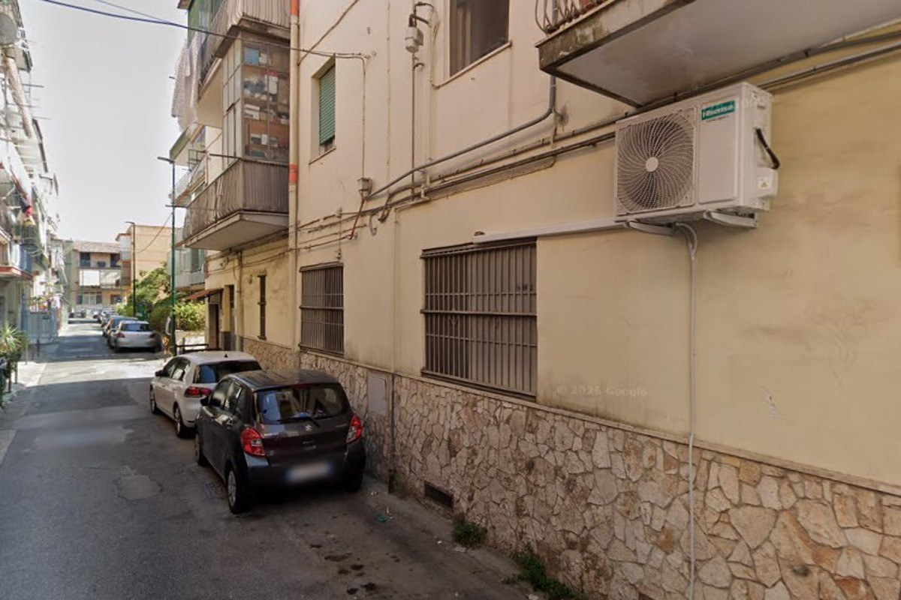

Mafia e antimafia · 4 novembre 2026
Pianura, 28 arresti per camorra e l'allarme di Gratteri sui gip

La Squadra mobile di Napoli esegue ventotto custodie in carcere contro tre gruppi del quartiere. Lo stesso giorno il procuratore annuncia che quasi 1.500 richieste di misura cautelare attendono un giudice: a dicembre saranno duemila.
di Franco Zanghì
All'alba del 4 novembre 2026 la Squadra mobile della Questura di Napoli, con il commissariato di Pianura, ha eseguito un'ordinanza di custodia cautelare in carcere nei confronti di ventotto persone. L'inchiesta è della Direzione distrettuale antimafia di Napoli. Pianura è un quartiere della periferia occidentale della città, verso i Campi Flegrei.
Le accuse, contestate a vario titolo, sono associazione di tipo mafioso, estorsione, traffico e spaccio di stupefacenti, detenzione e porto illegale di armi, con l'aggravante del metodo mafioso. Per tutti gli indagati vale la presunzione d'innocenza fino alla sentenza definitiva; alla data di pubblicazione non risultano dichiarazioni pubbliche delle difese.
Tre gruppi in un quartiere
Secondo gli inquirenti, nel quartiere si muovevano tre gruppi: i clan Esposito-Marsicano e Lago, che si sarebbero contrapposti fra loro, e un gruppo nuovo, indicato come clan Perfetto, che sarebbe diventato via via dominante.
L'inchiesta, sempre secondo la ricostruzione dell'accusa, parte nel novembre 2024 da un ordigno esploso sotto un'abitazione del quartiere. Poi le stese, i colpi sparati in strada per intimidire, e una piazza di spaccio che secondo gli investigatori lavorava ventiquattro ore su ventiquattro. Le estorsioni avrebbero colpito commercianti e attività della zona.
I numeri del procuratore
Nella stessa giornata, a margine della conferenza stampa, il procuratore di Napoli Nicola Gratteri ha dato un numero che riguarda tutta la giustizia napoletana. A settembre le richieste di misura cautelare in attesa all'ufficio del giudice per le indagini preliminari erano 1.300; ora sono quasi 1.500; a dicembre, secondo la sua previsione, arriveranno a duemila.
La causa, per il procuratore, è la carenza di organico: all'ufficio del gip mancano dieci magistrati. Gratteri ha detto di aver chiesto il trasferimento di giudici dal tribunale a quell'ufficio e di non avere ancora notizie di cambiamenti, aggiungendo che quei giudici lavorano molto ma non possono sostenere questo ritmo.
Perché i due fatti stanno insieme
Ogni richiesta in attesa è una decisione che spetta a un giudice e che per ora non è arrivata: non vuol dire che sia fondata, vuol dire che nessuno l'ha ancora valutata. Vale nei due sensi, perché il gip è anche il giudice che respinge. Quella di Pianura, il 4 novembre, è arrivata.
Ventotto persone in carcere accusate di camorra, droga, estorsioni e armi; e, lo stesso giorno, quasi millecinquecento richieste ferme per mancanza di giudici. È il motivo per cui le due notizie, nate nella stessa conferenza stampa, raccontano una cosa sola.
Fonti
- Ansa, «Giustizia: Gratteri, 1.500 le richieste di misure cautelari pendenti», 4 novembre 2026
- Il Mattino, «Napoli, blitz anticamorra all'alba a Pianura: in manette 28 persone», 4 novembre 2026
- Sky TG24, «Napoli, 28 arresti camorra. Gratteri: 1.500 richieste ferme», 4 novembre 2026
- La Notizia, «L'allarme di Gratteri: quasi 1.500 richieste di arresto ferme dal gip», 4 novembre 2026
- Ottopagine, «Blitz a Pianura, 28 arresti. L'allarme di Gratteri sui gip», 4 novembre 2026
- Internapoli, «Blitz contro i tre clan di Pianura, 28 indagati nella maxi inchiesta», 4 novembre 2026
- Comunicato della Questura di Napoli, 4 novembre 2026
Nessun indagato viene nominato: si tratta di misure cautelari nella fase delle indagini. L'attribuzione dei tre gruppi e la ricostruzione dei fatti sono dell'accusa. Il dato sulle richieste pendenti è una dichiarazione del procuratore e non un rilevamento ufficiale del ministero.
Questo articolo nasce dalla pagina Gli Eroi dell'Abisso, dove la stessa storia è raccontata in video.